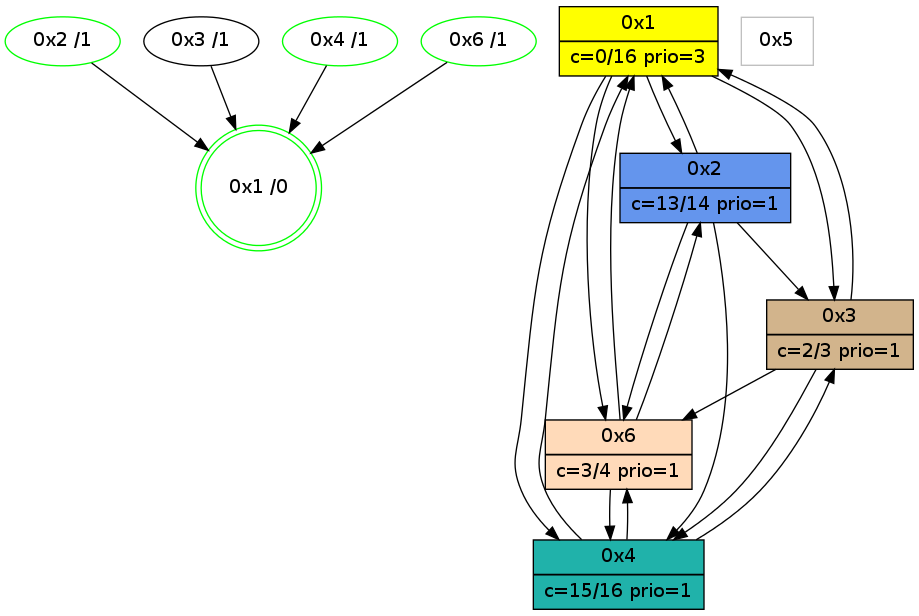

>> << IDX [start] -100 -25 -5 +0 +5 +25 [1190.21926308]
 Previous packets
----------------------------------------------------------------------
1185.196730 beacon01(adaf) #0 coord=01,02,05,03,04,06 cycle=944.0ms assoc
-- color-indic=0 64 71 21
1185.206692 beacon02(adaf) #0 coord=01,02,05,03,04,06 cycle=944.0ms assoc 64 20 de
1185.216692 beacon05(adaf) #0 coord=01,02,05,03,04,06 cycle=944.0ms assoc 64 86 f4
1185.226692 beacon03(adaf) #0 coord=01,02,05,03,04,06 cycle=944.0ms assoc 64 1a d0
1185.236692 beacon04(adaf) #0 coord=01,02,05,03,04,06 cycle=944.0ms assoc 64 bc fa
1185.246692 beacon06(adaf) #0 coord=01,02,05,03,04,06 cycle=944.0ms assoc 64 c8 e6
----------------------------------------------------------------------
1186.201238 beacon01(adaf) #0 coord=01,02,05,03,04,06 cycle=944.0ms assoc
-- color-indic=0 64 09 8c
1186.211199 beacon02(adaf) #0 coord=01,02,05,03,04,06 cycle=944.0ms assoc 64 58 73
1186.221199 beacon05(adaf) #0 coord=01,02,05,03,04,06 cycle=944.0ms assoc 64 fe 59
1186.231199 beacon03(adaf) #0 coord=01,02,05,03,04,06 cycle=944.0ms assoc 64 62 7d
1186.251200 beacon06(adaf) #0 coord=01,02,05,03,04,06 cycle=944.0ms assoc 64 b0 4b
1186.262344 [Hello(1): seq=868 sym=2,4,6,3 color=0 sysInfo=hasWarning,MaxColorIndicationCalled,MaxColorResponseCalled,MaxColorRequestCalled,ColoringModeRequestCalled stat=2:0,3,4,0/4:2,0,0,0/6:3,2,9,0/3:0,0,0,0]
----------------------------------------------------------------------
1187.205749 beacon01(adaf) #0 coord=01,02,05,03,04,06 cycle=944.0ms assoc
-- color-indic=0 64 cd e3
1187.215713 beacon02(adaf) #0 coord=01,02,05,03,04,06 cycle=944.0ms assoc 64 9c 1c
1187.225711 beacon05(adaf) #0 coord=01,02,05,03,04,06 cycle=944.0ms assoc 64 3a 36
1187.235711 beacon03(adaf) #0 coord=01,02,05,03,04,06 cycle=944.0ms assoc 64 a6 12
1187.245712 beacon04(adaf) #0 coord=01,02,05,03,04,06 cycle=944.0ms assoc 64 00 38
1187.255713 beacon06(adaf) #0 coord=01,02,05,03,04,06 cycle=944.0ms assoc 64 74 24
----------------------------------------------------------------------
1188.210253 beacon01(adaf) #0 coord=01,02,05,03,04,06 cycle=944.0ms assoc
-- color-indic=0 64 81 53
1188.220215 beacon02(adaf) #0 coord=01,02,05,03,04,06 cycle=944.0ms assoc 64 d0 ac
1188.230216 beacon05(adaf) #0 coord=01,02,05,03,04,06 cycle=944.0ms assoc 64 76 86
1188.240214 beacon03(adaf) #0 coord=01,02,05,03,04,06 cycle=944.0ms assoc 64 ea a2
1188.250214 beacon04(adaf) #0 coord=01,02,05,03,04,06 cycle=944.0ms assoc 64 4c 88
1188.260215 beacon06(adaf) #0 coord=01,02,05,03,04,06 cycle=944.0ms assoc 64 38 94
1188.271328 [Hello(1): seq=869 sym=2,4,6,3 color=0 sysInfo=hasWarning,MaxColorIndicationCalled,MaxColorResponseCalled,MaxColorRequestCalled,ColoringModeRequestCalled stat=2:0,3,4,0/4:2,0,0,0/6:3,2,9,0/3:0,0,0,0]
1188.274483 [STC(1) #0.212 new-neigh,tree-change,inconsistent-stability,stable,to-color d=0]
1188.277298 [Hello(4): seq=967 sym=1,3,6 sysInfo=hasWarning,MaxColorIndicationCalled,ColoringModeIndicationCalled,MaxColorResponseCalled stat=1:12,11,11,0/3:14,0,2,0/6:5,0,2,0]
----------------------------------------------------------------------
1189.214756 beacon01(adaf) #0 coord=01,02,05,03,04,06 cycle=944.0ms assoc
-- color-indic=0 64 45 3c
1189.224717 beacon02(adaf) #0 coord=01,02,05,03,04,06 cycle=944.0ms assoc 64 14 c3
1189.234718 beacon05(adaf) #0 coord=01,02,05,03,04,06 cycle=944.0ms assoc 64 b2 e9
1189.244717 beacon03(adaf) #0 coord=01,02,05,03,04,06 cycle=944.0ms assoc 64 2e cd
1189.254717 beacon04(adaf) #0 coord=01,02,05,03,04,06 cycle=944.0ms assoc 64 88 e7
1189.264720 beacon06(adaf) #0 coord=01,02,05,03,04,06 cycle=944.0ms assoc 64 fc fb
1189.276620 [Hello(3): seq=967 sym=6,1,4 color=2 sysInfo=hasWarning,MaxColorIndicationCalled,ColoringModeIndicationCalled,MaxColorResponseCalled stat=6:3,0,1,0/1:14,15,10,1/4:7,10,2,1]
1189.279617 [STC(3)->1 #0.212 new-neigh,tree-change,inconsistent-stability,to-color d=1]
1189.285102 [STC(6)->1 #0.212 new-neigh,tree-change,inconsistent-stability,stable,to-color d=1]
1189.294407 [STC(2)->1 #0.212 new-neigh,tree-change,inconsistent-stability,stable,to-color d=1]